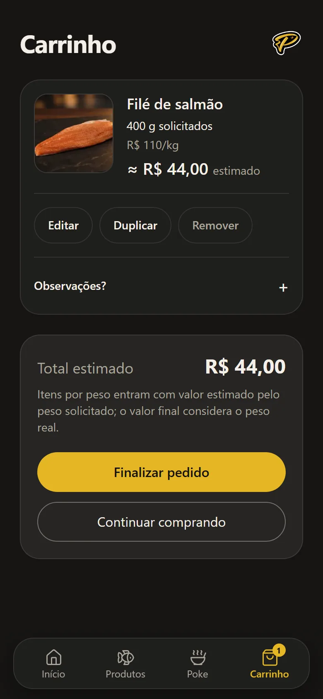

01Case · Pesca Delivery · 2026
Além da loja.
Da personalização de um Poke pelo WhatsApp a uma experiência digital que conecta compra e operação.
Em resumo
- Desafio
- Transformar a personalização manual de pedidos pelo WhatsApp em uma experiência de compra estruturada, integrada à operação.
- Minha atuação
- Investigação do problema, definição dos fluxos, UX/UI, regras de produto, especificação e validação da implementação assistida por IA.
- Solução
- Loja digital, Builder de Pokes, carrinho e painel operacional, conectados por regras de negócio.
- Estado atual
- Publicado e em operação. Os impactos quantitativos ainda não foram medidos.
Três decisões centrais
- 01Do passo a passo à composição contínua
O Builder deixou de ser uma sequência de etapas: as categorias ficam na mesma página e qualquer escolha pode ser revista sem recomeçar.
- 02Preço protegido, disponibilidade revalidada
O preço visto no carrinho não muda durante a sessão; a disponibilidade é conferida de novo ao finalizar.
- 03Compra e operação no mesmo pedido
Loja e Painel seguem as mesmas regras de peso, preço, disponibilidade e pagamento, do carrinho à separação.
Onde o cliente decide
Escolhe pescados, monta o Poke e fecha o pedido sem depender de uma conversa.
A fonte da verdade
Peso, preço, disponibilidade e pagamento tratados do mesmo jeito dos dois lados.
Onde a operação age
Organizado por uma pergunta: o que precisa ser feito agora?
02Oportunidade
Um Poke montado mensagem por mensagem.
Eu conhecia o Pesca como uma peixaria. Quando o negócio passou a oferecer Pokes personalizados, percebi que os clientes escolhiam ingredientes e montavam o prato pelo WhatsApp.
Perguntei ao responsável pelo negócio qual era uma das maiores dificuldades da operação. A resposta: o tempo dedicado ao atendimento pelo WhatsApp. Por iniciativa própria, também pedi dados comerciais e o catálogo, para entender demanda, variações de peso e formas de preparo antes de desenhar qualquer coisa.
O que eu vi
Uma experiência de personalização improvisada num canal de conversa.
O que a operação sentia
Muito tempo consumido pelo atendimento no WhatsApp, segundo o responsável pelo negócio.
A oportunidade
Uma compra mais autônoma, ligada a uma estrutura que acompanha o pedido. Loja e Painel, desde a concepção.
O Pesca já usava outros sistemas para caixa, balança e gestão fiscal. A proposta nunca foi substituí-los.
03Primeiro protótipo
Rápido para discutir, concreto para decidir.
Explorei e estruturei as ideias e usei o Figma Make para chegar depressa a uma primeira experiência visual.
A IA entrou como meio de prototipação. As decisões continuavam sendo de produto: o que a Loja precisa mostrar, como um Poke é montado, como o carrinho trata itens vendidos por peso.
Evidência histórica do primeiro protótipo, não as telas do produto atual. Textos e valores são de uma exploração inicial e não representam os preços atuais do Pesca.
04Evolução do Builder
De formulário a composição.
O primeiro protótipo montava o Poke em etapas. Identifiquei dois problemas e propus reunir as categorias numa mesma página.
AntesMontagem sequencial
- Bases
- Etapa 2
- Etapa 3
- Etapa 4
- Etapa 5
Protótipo inicial no Figma Make, montagem por cinco etapas. O primeiro Builder implementado partiu de um wizard de seis etapas: outra versão, que não se mistura a esta.

DepoisComposição contínua
O Builder evoluiu para uma montagem contínua: categorias na mesma página, adicionais no contexto da escolha e resumo sempre visível.
Captura real da loja pública em produção. Itens marcados como indisponíveis refletem o momento da captura.
Revisar sem recomeçar
Trocar a base depois de chegar aos molhos exigia voltar etapas. Com tudo na mesma página, qualquer escolha pode ser reconsiderada.
Montar, não preencher
A sequência de telas parecia um formulário e estimulava pouco o apetite. A composição contínua traz o prato de volta ao centro.
Não houve teste formal com consumidores nem medição de conversão. A mudança nasceu de observação e de julgamento de produto.
05Identidade
Dois universos, uma identidade.
O Pesca vende Pokes personalizados e pescados tradicionais. São intenções de compra diferentes, que convivem na mesma loja e no mesmo pedido.
Percebi que as embalagens e comunicações recentes do Pesca caminhavam para algo mais premium e quis levar isso para a interface. O Dark Premium deu mais presença à marca e uma atmosfera própria.
Peixes, frutos do mar e preparados, escolhidos por produto, peso e forma de preparo.
Base, proteína, acompanhamentos e molhos, compostos pelo próprio cliente.
O desafio: uma interface escura não podia escurecer a comida. As fotografias continuam sendo o centro de cor da Loja.
Aqui a identidade do Pesca é conteúdo do case. A página segue a identidade do portfólio.
06Um pedido
Um pedido, três perspectivas.
A mesma compra vista por quem pede, pelas regras que a sustentam e por quem executa.
Cliente
“Quero isso e quero saber quanto vai ficar.”
- 1Escolhe pescados e monta o Poke.
- 2Vê o total estimado, com os itens por peso marcados como estimados.
- 3Acompanha o pedido numa página pública.
Sistema
“O que é verdade agora?”
- 1Protege o preço e revalida a disponibilidade.
- 2Registra peso solicitado e, depois, peso efetivo.
- 3Mantém o pagamento pendente até haver confirmação.
Operação
“O que precisa ser feito agora?”
- 1Vê o pedido organizado por urgência de trabalho.
- 2Separa e pesa os itens vendidos por peso.
- 3Confirma o pagamento e acompanha retirada ou entrega.
- 4Conversa pelo WhatsApp quando algo foge do previsto.
Captura real Painel operacional · ambiente de demonstração · dados fictícios
O que a equipe precisa fazer agora?
O Painel organiza o trabalho em filas e coloca a próxima ação em destaque no pedido aberto. É a terceira perspectiva, vista como a equipe a usa.
- Três filas na aba AgoraPara fazer, Aguardando e Em andamento. Cada linha mostra número, cliente, forma de recebimento, total e o estado do pedido.
- Uma próxima ação por vezO pedido aberto diz em que estado está e o que fazer em seguida. Registrar pagamento aparece à parte: na retirada, preparo e pagamento seguem eixos diferentes.
- No celularO menu lateral vira uma barra no topo e a lista ocupa a largura da tela, com os mesmos rótulos, valores e filas.
Captura real da interface em ambiente de demonstração, com dados fictícios. Os números das abas contam pedidos de teste, não volume de operação. O e-mail da conta administrativa foi removido da imagem.
Dez estados no domínio. Três perguntas no Painel.
Os agrupamentos do Painel, como Agora ou Hoje, ajudam as pessoas a trabalhar. Não são estados do pedido: o estado continua sendo definido pelo domínio.
1 Estados do domínio
- Aguardando finalização
- Aguardando pagamento
- Confirmado
- Em preparo
- Retirada
- Pronto para retirada
- Concluído
- Entrega
- Pronto para entrega
- Aguardando entregador
- Em entrega
- Concluído
Sem pendência, o pedido já nasce em Aguardando pagamento ou Confirmado. Cancelado vale a partir de qualquer estado não final.
2 Agrupamentos da aba Agora
Para fazer
A operação age agora.
- Qualquer pedido ativo com pendênciaPeso pendenteFrete pendentePendência aberta→ Resolver pendências
- Confirmado ASAP→ Iniciar preparo
- Pronto para entrega→ Solicitar motorista
Aguardando
Depende de outra pessoa.
- Aguardando pagamento→ Confirmar pagamento
- Pronto para retirada→ Registrar pagamento ou Concluir ao retirar
- Aguardando entregador→ Saiu para entrega
Em andamento
Já está acontecendo.
- Em preparo→ Marcar como pronto
- Em entrega→ Concluir entrega
Ficam fora de Agora: pedidos concluídos ou cancelados e pedidos agendados sem pendência, que aparecem em Hoje ou Próximos. Uma pendência vence o agendamento: o pedido aparece em Para fazer antes do horário.
3 Pagamento é outro eixo
- PendenteEnquanto o valor depende de pesagem ou frete, o Painel mostra “Aguardando valor final”. Copiar o código Pix registra intenção, nunca pagamento.
- Pagamento na retiradaO pedido pode estar Confirmado sem ter sido pago. Só conclui depois de “Registrar pagamento”.
- PagoSó a operação confirma. O rótulo de pagamento nunca se mistura ao estado do pedido.
07Design Engineering
Quando UX vira regra.
Decisões de experiência que se transformaram em comportamento de software. Três exemplos.
Peso pedido não é peso separado
No pedido de demonstração abaixo, o cliente pede 400 g de filé de salmão e a peça separada pesa 430 g. O sistema distingue o que foi pedido do que foi pesado, e o valor acompanha o peso efetivo. Transparência antes da surpresa. Se houver discordância, a conversa continua entre pessoas, pelo WhatsApp.
Aprofundar
Intenção de compra e forma de precificação são conceitos diferentes. Em peixes inteiros, o cliente escolhe unidades; o valor sai do peso real multiplicado pelo preço por kg.
Pedidos antigos não são reinterpretados quando o catálogo muda: histórico comercial permanece histórico.
Intenção de compra
Na Loja: 400 g solicitados, cerca de R$ 44,00 estimado.
Pesagem pela equipe
No Painel: 430 g registrados, 30 g (7,5%) acima do pedido.
Valor definitivo
R$ 47,30, ou 0,430 kg × R$ 110,00/kg. A equipe e o cliente veem o mesmo valor.

Captura real Loja publicada · carrinho · 26/10/2026
Antes da pesagem, o total é uma estimativa.
O sistema diferencia o peso solicitado do peso efetivamente separado, evitando apresentar um valor provisório como definitivo.
- “400 g solicitados”é a intenção de compra, não o peso final.
- “≈ R$ 44,00 estimado”vem do peso solicitado vezes o preço por kg protegido no carrinho.
- “Total estimado”só aparece quando algum item tem valor estimado pelo peso. Com itens de preço fechado, o rótulo é “Total”.
Item adicionado só para a captura, num navegador isolado: nenhum pedido foi criado.
Captura real Painel e página do pedido · ambiente de demonstração · dados fictícios
Na pesagem, a estimativa vira valor definitivo.
A equipe registra o peso efetivo no Painel, o sistema recalcula o item e o pedido, e a página de acompanhamento passa a mostrar ao cliente os mesmos valores.
2 Painel · antes de salvar
O item segue “Aguardando pesagem” e o pedido, em Finalização pendente. Ao digitar 430 g, o Painel mostra a variação e o novo valor antes de salvar.
2 Painel · depois de salvar
O item passa a R$ 47,30, sem “estimado”, e o total final acompanha. Resolvida a pendência, o pedido passa a Confirmado, com a próxima ação Iniciar preparo.
3 Página do cliente
O cliente vê o que a equipe registrou.
Depois da pesagem, a página de acompanhamento mostra o valor efetivo: peso solicitado e peso final, estimado e final lado a lado, e o total final. Se o valor gerar dúvida, o link leva à conversa com o Pesca.
Captura real da interface em ambiente de demonstração, com dados fictícios. O pedido #14469 foi criado só para esta demonstração; o carrinho acima vem da loja publicada e não gerou pedido. As capturas usam o mesmo produto e o mesmo peso para mostrar a sequência completa.
Preço protegido, disponibilidade revalidada
O preço visto no carrinho não muda por baixo do cliente. A disponibilidade pode mudar, então é conferida de novo na hora de finalizar. Um produto indisponível continua visível, com o aviso “Indisponível no momento”.
Aprofundar
Produto cadastrado não significa produto disponível: catálogo e disponibilidade são conceitos separados.
“Indisponível no momento” é um produto real, temporariamente sem compra. “Em breve” é um produto ainda não lançado.
Adiciona ao carrinho
O preço fica protegido.
Revisa o carrinho
Itens por peso aparecem como estimados.
Finaliza
A disponibilidade é conferida de novo.
Disponível: o pedido segueIndisponível no momento: o cliente é avisado
Estados que não prometem demais
A interface não diz mais do que o sistema sabe. Pagamento pendente não é pagamento confirmado. Abrir o WhatsApp não é ter enviado uma mensagem.
Aprofundar
Mesmo quando o cliente copia o código Pix, isso é registrado como intenção, nunca como pagamento. Só a operação confirma, e o Painel nunca mostra essa atividade com cara de dinheiro recebido.
A comunicação por WhatsApp é manual: não existe estado persistido de notificação, então o sistema só sabe que a conversa foi aberta.
Mostrar menos capacidades reais é preferível a mostrar capacidades falsas. Isso vale também para testes: QA não simula um pagamento que não aconteceu.
Aguardando confirmação.
Recebido e registrado.
É o que o sistema consegue saber.
Não observável, por isso não é afirmada.
08Desenvolvimento assistido por IA
Direção e responsabilidade.
Defini o produto, coordenei os agentes e validei o resultado. A confiança veio da auditoria, não do relatório.
- 01
Definição
Problema, escopo e critérios de qualidade.
- 02
Especificação
Planejamento e análise crítica, com apoio do ChatGPT.
- 03
Implementação
Claude Code e outros agentes escrevem o código.
- 04
Auditoria
Revisão independente do que foi relatado.
- 05
Validação
O comportamento real é verificado antes de seguir.
Decisões de produto, experiência, escopo e critérios de qualidade.
Implementação técnica a partir de especificações, sem decidir o que o produto deve ser.
Relatórios não eram prova. Cada entrega passava por auditoria e pela verificação do comportamento real.
O trabalho foi dividido no início entre Loja, Painel e um Vault Obsidian com a memória do projeto, e unificado na reta final do lançamento. A implementação foi assistida por IA; a direção, não.
O risco estava no próprio ambiente.
Desenvolvimento e testes precisam de uma fronteira explícita contra produção.
Por isso implementar, validar e governar são responsabilidades distintas: quem executa uma tarefa não é, sozinho, quem garante que ela é segura.
09Operação e aprendizados
Publicado. Em operação. Em observação.
O lançamento não é o fim do trabalho. É quando o produto começa a ensinar.
Produto publicado
Loja e Painel estão no ar e em uso real.
Recepção qualitativa positiva
O feedback relatado durante o projeto pelo responsável pelo negócio foi muito positivo quanto à estética, ao profissionalismo, à facilidade de uso e à coerência com a identidade do Pesca, assim como a recepção inicial dos clientes. É um retorno qualitativo e indireto, não uma pesquisa formal.
Migração em andamento
Clientes habituados ao WhatsApp estão sendo direcionados ao novo canal.
Impacto ainda por medir
Ainda não há evidência para afirmar redução do tempo de atendimento, crescimento de vendas ou conversão. Medir ao longo do tempo faz parte do próximo capítulo.
Design não termina na interface. Termina quando a operação consegue cumprir o que a interface promete.
O produto entrou numa fase de operação e observação, e a evolução agora é guiada pelo uso real, não por suposição.